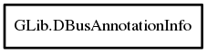

GLib.DBusAnnotationInfo – gio-2.0 Reference Manual
Packages
gio-2.0
GLib
DBusAnnotationInfo
@ref
unref
annotations
key
ref_count
value
DBusAnnotationInfo
Object Hierarchy:

Description:
[
Compact
]
public
class
DBusAnnotationInfo
Information about an annotation.
Namespace:
GLib
Package:
gio-2.0
Content:
Methods:
public
DBusAnnotationInfo
@ref
()
If
this
is statically allocated does nothing.
public
void
unref
()
If
this
is statically allocated, does nothing.
Fields:
public
DBusAnnotationInfo
[]
annotations
public
string
key
public
int
ref_count
public
string
value